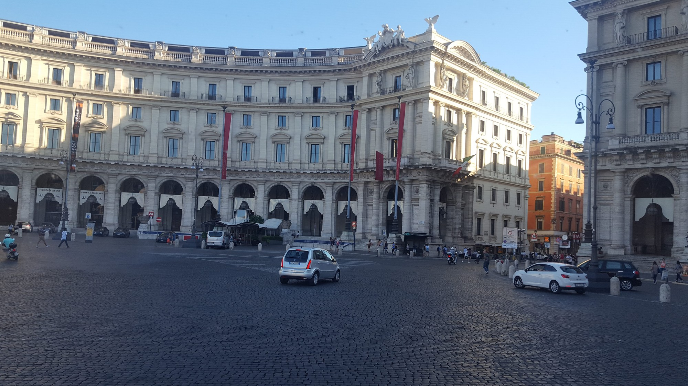
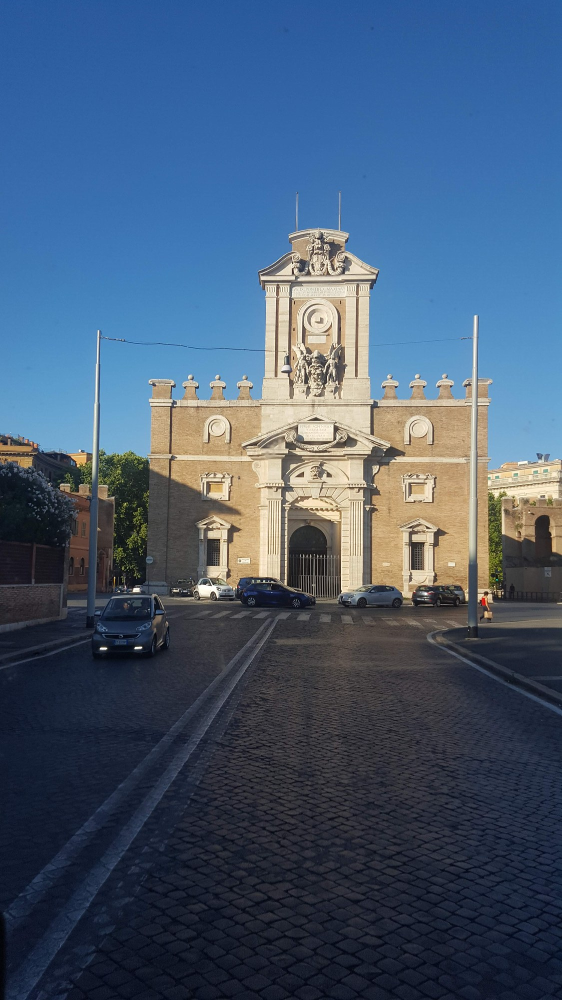

Řím a Vatikán
Svatopetrské náměstí ve Vatikánu, Koloseum a letní zastávky u Piazza della Repubblica a Porta Pia. Květen a srpen 2019.
Vatikán — Svatopetrské náměstí
Bazilika sv. Petra, Berniniho kolonáda, obelisk a kašny. Květen 2019.


Dalších 2 fotografií (celkem 6)Sbalit další fotografie


Řím — jarní zastávky
Zastávky u Kolosea při jarní návštěvě Říma. (5 fotografií)


Dalších 1 fotografií (celkem 5)Sbalit další fotografie

Řím 2019 — další záběry
Letní návrat do Říma. Délka front závisí na památce, termínu a rezervaci. (6 fotografií)


Dalších 2 fotografií (celkem 6)Sbalit další fotografie


Řím — Piazza della Repubblica a Porta Pia
Dvě zastávky při letním návratu do Říma. Srpen 2019.


Poznámky k cestě
Řím je město, kde se nedá vidět všechno za týden — natož za den. Vatikán a Bazilika sv. Petra, Koloseum, Pantheon, Forum Romanum, Fontána di Trevi. K tomu uličky Trastevere, římská kuchyně (cacio e pepe, carbonara, supplì) a po několika dnech pochopíš proč je „věčné".
Zdroje a aktuální informace
Osobní fotografie zachycují dřívější cesty. Před návštěvou ověř aktuální vstup, rezervace a místní omezení.
Vatikánská muzea
Partnerský odkaz: pokud přes něj uskutečníš rezervaci, mohu získat provizi.